DESARROLLO
N°1: Sitio Principal
El primer sitio a tratar, es la página principal
de la Municipalidad de Rancagua
VISTA DE DISEÑO
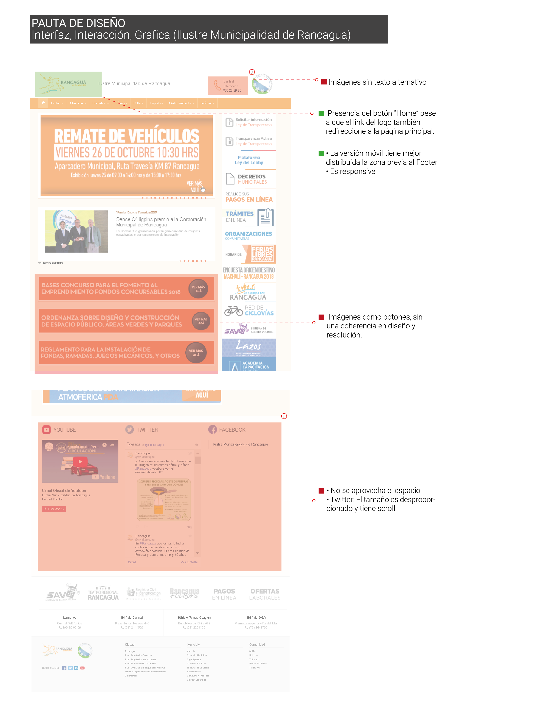
Aspectos Negativos
- El audio es incorporado de manera efectiva, hace referencia a la información
principal, pero esta no tiene opción de cerrado.
- Existen botones informativos con distintos tamaños y posiciones. Algunos llegan a
estar pixelados (no tienen la misma resolución).
- Una de las redirecciones de las páginas de la parte izquierda, no se encuentra vigente
http://www.eodmachalirancagua.cl/
- No se aprovecha de buena manera la sección de redes sociales, en específico la de
facebook. Podrían tener un tamaño más acotado.
- La sección de central de llamado tiene una redirección sin uso.
“Central telefónica”.
- No hay una ley clara en la iconografía que se utiliza.
- No existe un “seguimiento” del recorrido del usuario.
- Si bien se puede recorrer el sitio con el tabulador, uno no se
puede devolver y en sí es muy lento de recorrer. En particular la sección
de noticias de twitter, donde se queda pegado avanzando en el scroll hasta
que termina la sección. También esto sucede en la sección de los slides.
- Continuando con el scroll de twitter, su tamaño es desproporcionado en relación
a las demás cajas que contienen las otras redes sociales.
Aspectos Positivos
- Un aspecto positivo es la presencia del botón “Home” pese a que el link del logo
también redireccione a la página principal.
- Es responsive.
- La versión para móvil tiene mejor distribuída la zona previa al Footer.
- Existe un menú que se mantiene constante cuando uno explora las demás secciones.
- Se puede manejar por teclado (Tab).
VALIDACIÓN POR WAVE
- 73 Errors
- 27 Alerts
- 6 Features
- 46 Structural Elements
- 188 HTML5 and ARIA
- 34 Contrast Errors
- De los 73 errores:
- 4 de ellos corresponden a imágenes sin link que no tienen texto alternativo.
- 61 errores corresponden a imágenes que si tienen vinculado un link, pero que tampoco
poseen texto alternativo.
- 2 son links que no presentan un texto (Icono Home)
- 6 errores ARIA
- 27 Alertas:
- Pasa del h1 al h5, debería existir sólo un h1. Además el h5 podría ser
reemplazado por un párrafo "p".
- Links redundantes que llevan a la misma página, pero sólo 2 veces,
lo cual no está mal.
- Debería de avisar que el link lleva a un pdf.
- Elementos Estructurales:
- 9 h1 (debería existir 1).
- 13 h4 (esto está bien)
- HTML5 and Aria:
- 1 Navegación
- 64 de ARIA
- 29 ARIA label or description
- 94 ARIA tabindex
PAUTAS DE ACCESIBILIDAD PARA EL CONTENIDO WEB (WCAG) 2.0
Principio 1: Perceptible
Pauta 1.1: Contenido no Textual
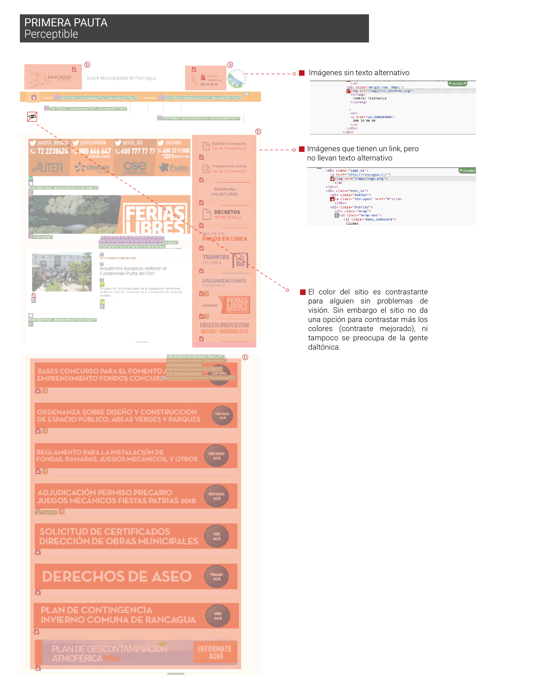
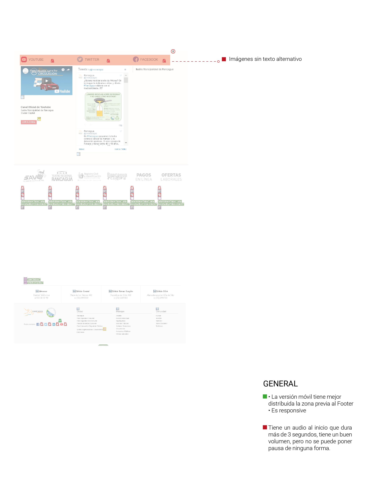
Las imágenes no tienen texto alternativo (tanto las que poseen link,
como las que no). Las imágenes son principalmente íconos y imágenes
que intentan ser botones, pero parecen banners.
Pauta 1.2: Medios Tempodependientes
Cuando se ingresa al sitio principal aparece un audio que no puede
pararse cuando uno quiera (se recurre a silenciar la pestaña).
El contenido del audio no está actualizado y tampoco presenta una versión
escrita visible para el usuario.
Pauta 1.3: Adaptable
El contenido auditivo es limitado a un anuncio/información, más no se utiliza
como medio para incluir a gente no vidente.
El sitio es responsive, por lo tanto sus elementos son flexibles al cambiar de
dispositivo.
Pauta 1.4: Distinguible
El color del sitio es contrastante (Anaranjado-Celeste-Blanco) para alguien sin problemas de visión.
Sin embargo el sitio no da una opción para contrastar más los colores (contraste mejorado), ni tampoco
se preocupa de la gente daltónica.
Tiene un audio al inicio que dura más de 3 segundos, tiene un buen volumen, pero no se puede poner
pausa de ninguna forma. Además otro problema es que el audio tiene un sonido de fondo que causa confusión
a gente con problemas auditivos.
Principio 2: Operable
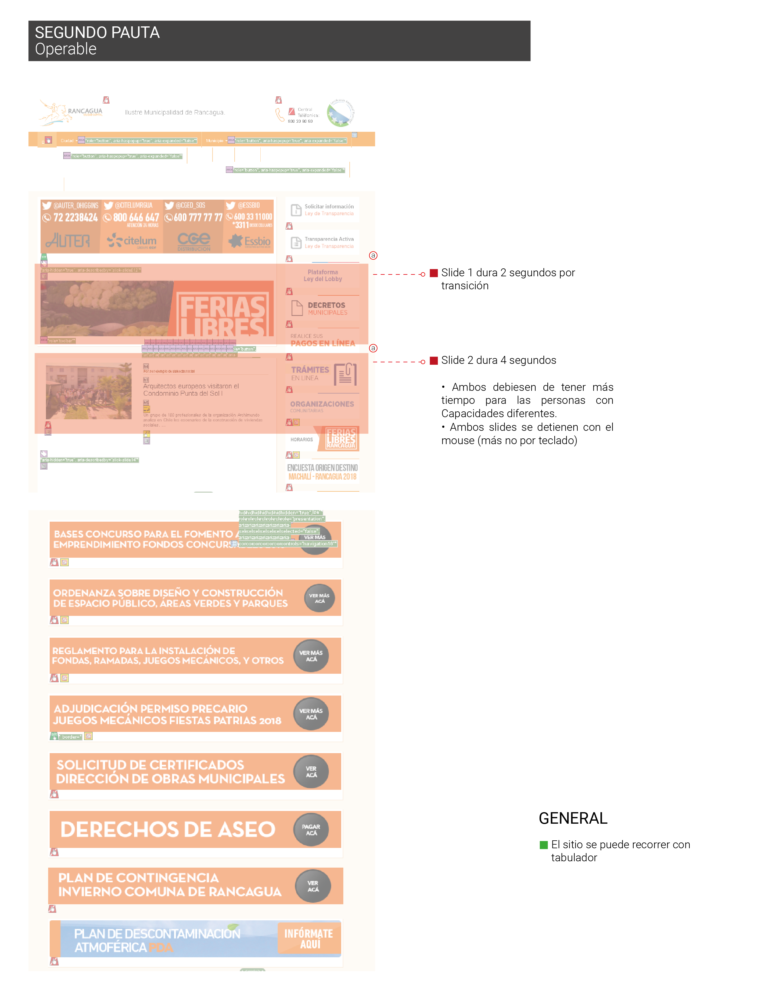
Pauta 2.1: Accesible por Teclado
Se puede recorrer el sitio a través del teclado (Tabulador), pero una vez se llega a
la zona de redes sociales (antes del footer) se vuelve todo mucho más lento
de recorrer (Twitter).
Pauta 2.2: Tiempo Suficiente
Existen dos visualizaciones de slides que cambian automáticamente, el primero
no cumple con el tiempo requerido para personas con capacidades diferentes, ya que
éste dura 2 segundos en cambiar a la siguiente imagen. El segundo slide tampoco, ya
que dura 4. Pero si tiene la opción para detenerse (mouse, pero no teclado).
Pauta 2.3: Convulsiones
No presenta problemas en este ámbito.
Pauta 2.4: Navegable
El sitio presenta una coherencia en el propósito de los textos y su link.
Existen títulos para cada sección dentro del sitio, pero no hay una muestra del recorrido
que hizo el usuario, no hay como saber la ubicación.
Hay algunos slides en los que no se puede volver atrás con la flechita del navegador.
Principio 3: Comprensible
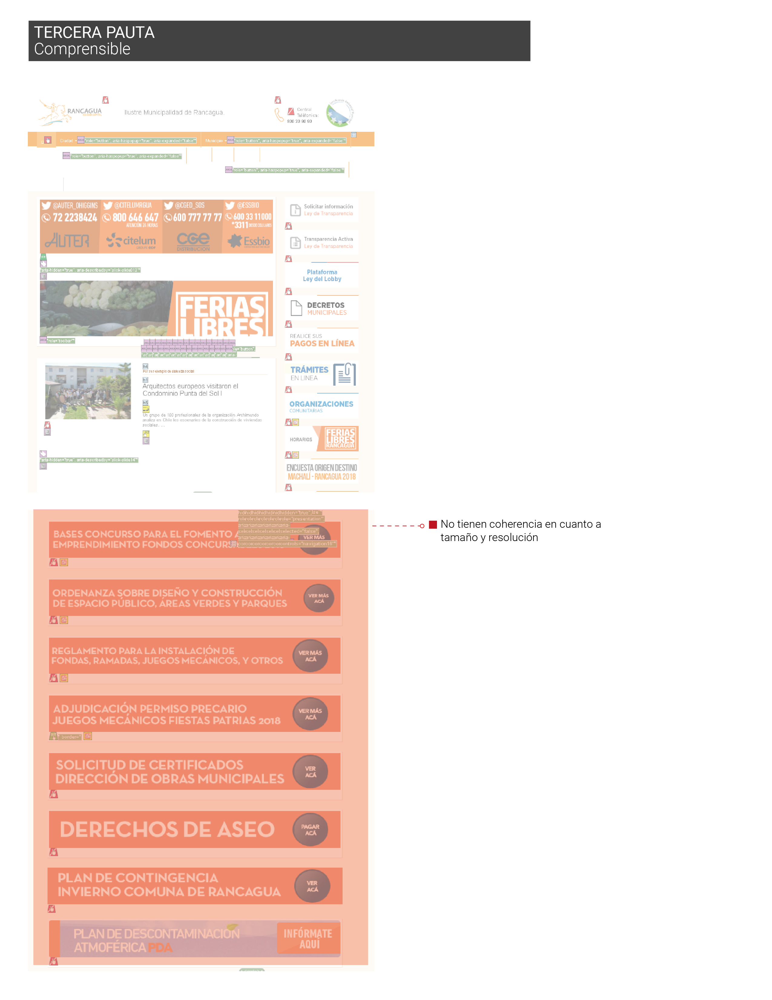
Pauta 3.1: Legible
No presenta mayores problemas.
Pauta 3.2: Predecible
No presenta mayores problemas.
Salvo las imágenes que intentan ser botones, ya que entre sí no tienen una coherencia en
cuanto a tamaños y resolución.
Pauta 3.3: Entrada de datos asistida
No aplica.
Principio 4: Robusto
Pauta 4.1: Compatible
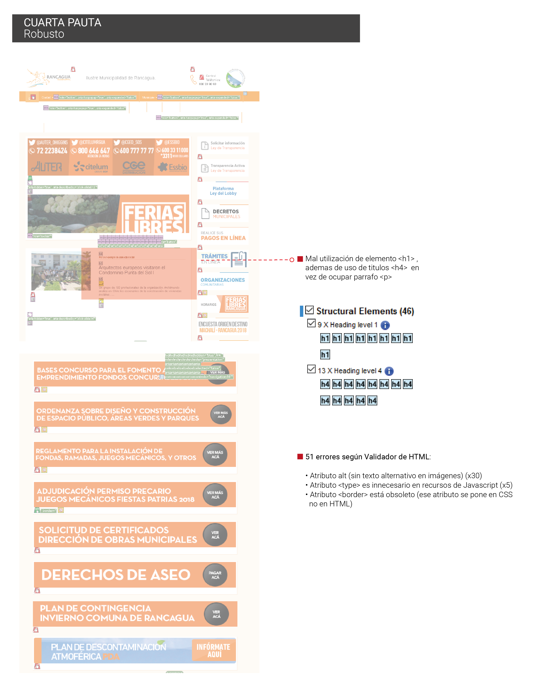
- 51 errores según Validador de HTML:
- Atributo alt (sin texto alternativo en imágenes) (x30)
- Atributo type es innecesario en recursos de Javascript (x5)
- Atributo border está obsoleto (ese atributo se pone en CSS no en HTML)
VALIDACIÓN POR WAVE
- 1 Error
- 1 Alert
- 2 Features
- 3 Structural Elements
- 1 HTML5 and ARIA
- 2 Contrast Errors
El error es que el logo no tiene texto alternativo.
La alerta es porque tiene el link de inicio redundante: en el título y en el
“Inicio” (pero no lo consideramos error)
PAUTAS DE ACCESIBILIDAD PARA EL CONTENIDO WEB (WCAG) 2.0
Principio 1: Perceptible
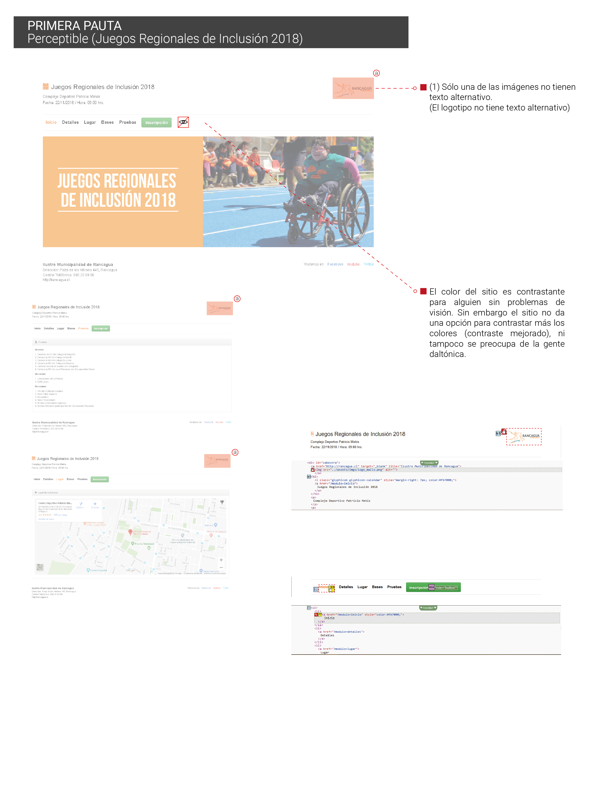
Pauta 1.1: Contenido no Textual
Sólo una de las imágenes no tienen texto alternativo.
Pauta 1.2: Medios Tempodependientes
No aplica.
Pauta 1.3: Adaptable
No tiene elementos de audio.
El sitio es responsive, por lo tanto sus elementos son flexibles al cambiar de dispositivo.
Pauta 1.4: Distinguible
El color del sitio es contrastante (Anaranjado-Celeste-Blanco) para alguien
sin problemas de visión. El sitio no da una opción para contrastar más los colores
(contraste mejorado), ni tampoco se preocupa de la gente daltónica.
Principio 2: Operable
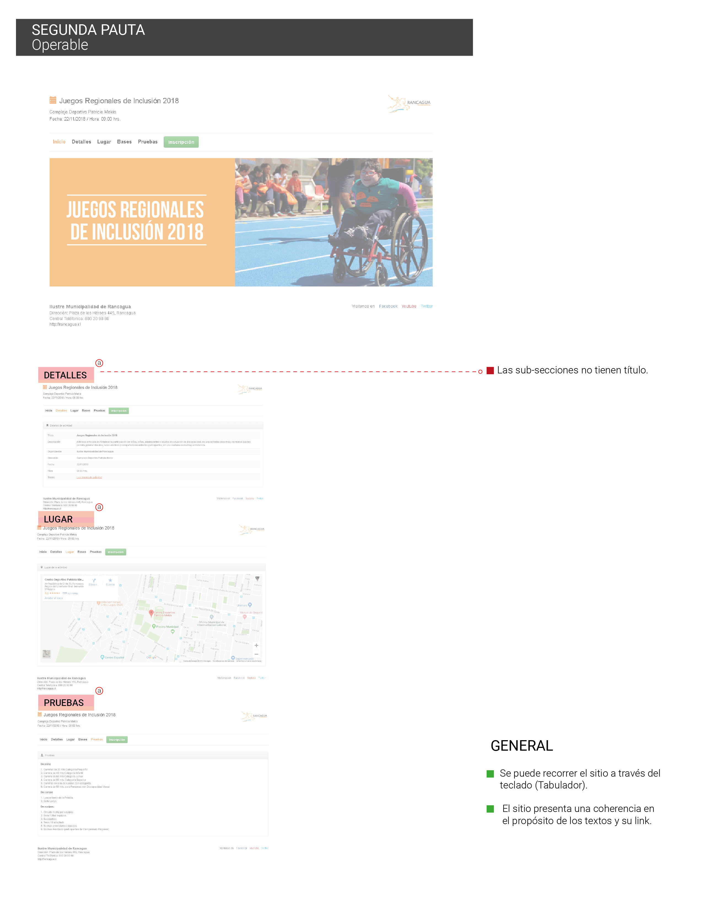
Pauta 2.1: Accesible por Teclado
Se puede recorrer el sitio a través del teclado (Tabulador).
Pauta 2.2: Tiempo Suficiente
No aplica
Pauta 2.3: Convulsiones
No aplica
Pauta 2.4: Navegable
El sitio presenta una coherencia en el propósito de los textos y su link.
Las sub-secciones no tienen título.
Principio 3: Comprensible
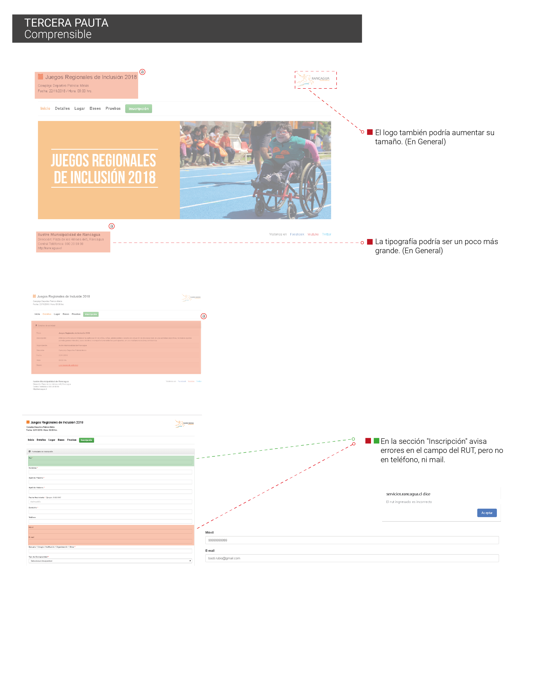
Pauta 3.1: Legible
La tipografía podría ser un poco más grande.
El logo también podría aumentar su tamaño.
Pauta 3.2: Predecible
No presenta mayores problemas.
Pauta 3.3: Entrada de datos asistida
No aplica.
Principio 4: Robusto
Pauta 4.1: Compatible
6 errores + 1 alerta
Uno de los errores está ubicado en el “meta charset”
VALIDACIÓN POR WAVE
- 44 Errors
- 52 Alerts
- 1 Features
- 50 Structural Elements
- 41 HTML5 and ARIA
- 34 Contrast Errors
- De los 44 errores:
- 4 de los errores corresponden a que no existe texto alternativo para imágenes.
- 31 errores se refieren a que no existe nuevamente un texto alternativo,
pero esta vez referido a imágenes con links.
- El sitio no tiene un título
- 2 Links que no presentan texto (ícono home)
- 6 errores ARIA (etiqueta)
- 52 Alertas:
- No sigue el orden estructural de los títulos: se saltan al h4,
pero no es un mayor problema
- Un link redundante (x2)
- 12 links que llevarían a archivos power point, pero sólo son
visibles en el html.
- 38 links que llevan a archivos pdf, no avisados al usuario.
- Elementos Estructurales:
- El h1 está bien puesto y es sólo 1.
PAUTAS DE ACCESIBILIDAD PARA EL CONTENIDO WEB (WCAG) 2.0
Principio 1: Perceptible
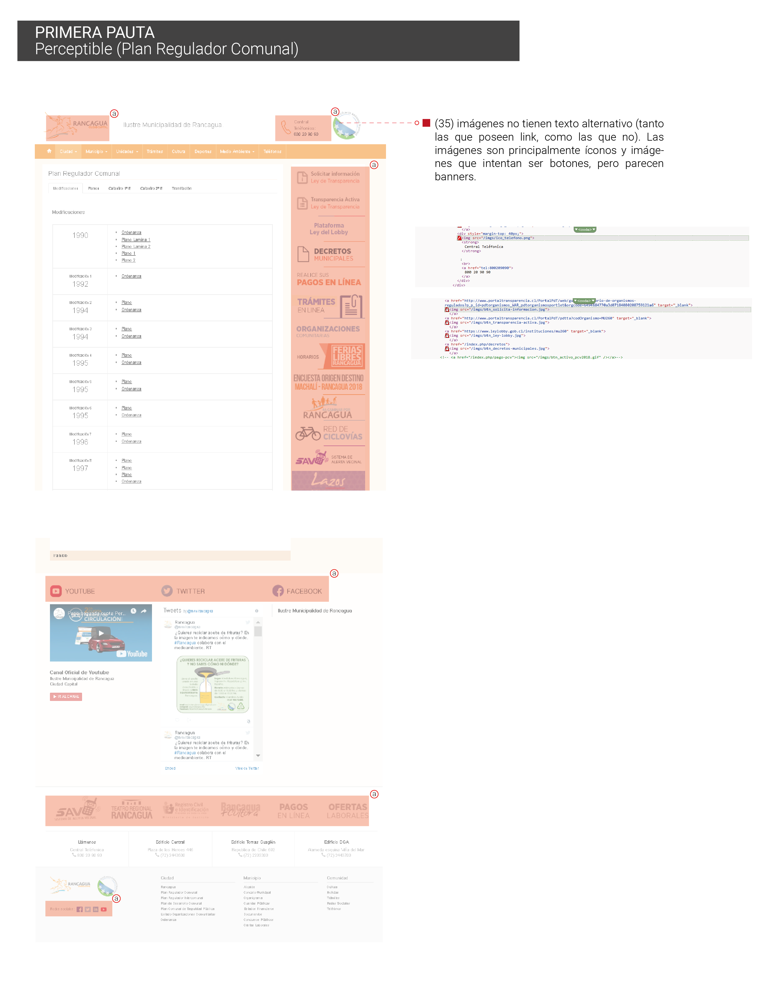
Pauta 1.1: Contenido no Textual
Las imágenes no tienen texto alternativo (tanto las que poseen link,
como las que no). Las imágenes son principalmente íconos y imágenes que
intentan ser botones, pero parecen banners.
Pauta 1.2: Medios Tempodependientes
No aplica.
Pauta 1.3: Adaptable
No tiene elementos de audio. El sitio es responsive, por lo tanto sus
elementos son flexibles al cambiar de dispositivo.
Pauta 1.4: Distinguible
- El color del sitio es contrastante (Anaranjado-Celeste-Blanco) para alguien
sin problemas de visión. El sitio no da una opción para contrastar más los colores
(contraste mejorado), ni tampoco se preocupa de la gente daltónica.
- Presenta link de jpg y archivos en pdf, pero se encuentran ya trazados
como elemento seleccionado (Subrayado). Su contraste es menor al momento
de pasar el mouse por encima de ellos.
- Tonos plomo más opaco a un plomo menos.
Principio 2: Operable
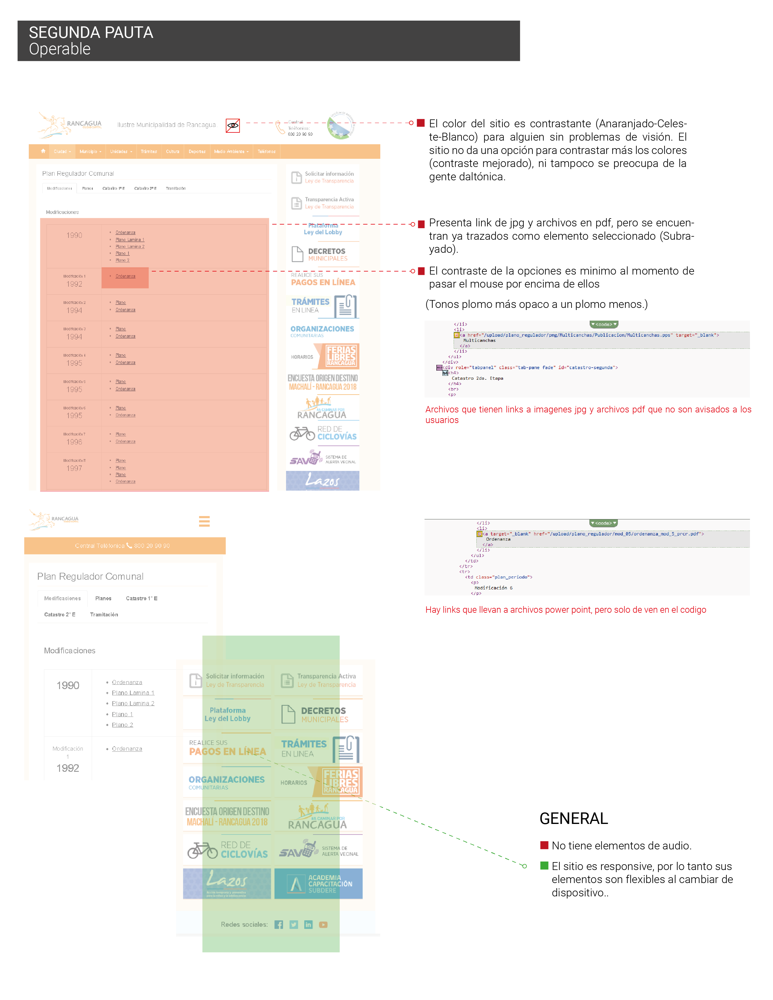
Pauta 2.1: Accesible por Teclado
Se puede recorrer el sitio a través del teclado (Tabulador)
Pero en el sector de la redes sociales en especial twitter, la bajada
con el tabulador recorre todas las noticias puestas.
Pauta 2.2: Tiempo Suficiente
Al momento presionar el link de una imagen jpg, la duración de la
carga sobrepasa los 10 segundos. (igual se piensa que son planos y la
información necesaria solicita a una buena resolución)
Pauta 2.3: Convulsiones
No aplica.
Pauta 2.4: Navegable
El sitio presenta una coherencia en el propósito de los textos y su link,
salvo los textos que llevan a archivos pdf y jpg, ya que no avisan al usuario.
Las sub-secciones tienen título y tiene un botón extra para regresar al inicio.
Principio 3: Comprensible
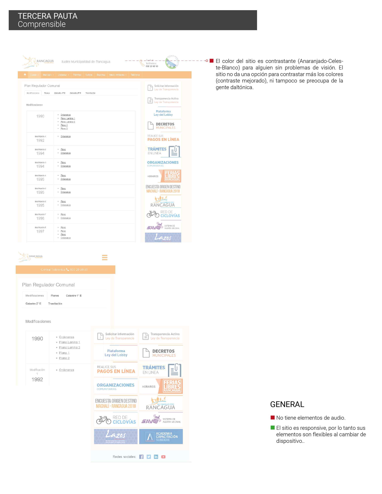
Pauta 3.1: Legible
Podría mejorar el orden.
Pauta 3.2: Predecible
No presenta mayores problemas.
Pauta 3.3: Entrada de datos asistida
No aplica.
Principio 4: Robusto

Pauta 4.1: Compatible
43 errores + 5 alertas
Errores:
- No hay título en el header.
- No hay texto alternativo para las imágenes.
- Problemas con CSS porque ocupa "br"
- El elemento “frameborder” es un elemento que se encuentra obsoleto,
actualmente se usa CSS en vez de eso.
- El atributo ARIA-controls debe apuntar a un elemento en el mismo documento.
Alertas:
El atributo type es innecesario para Javascript.
VALIDACIÓN POR WAVE
- 71 Errors
- 129 Alerts
- 17 Features
- 56 Structural Elements
- 135 HTML5 and ARIA
- 147 Contrast Errors
- De los 71 errores:
- 5 de los errores corresponden a la falta de texto alternativo en imágenes.
- Un control de formulario no tiene la etiqueta correspondiente.
- 5 botones vacíos, sin texto.
- 51 links no contienen texto.
- Referencia Aria rota (x9).
- 129 Alertas:
- Se salta niveles de título 2 veces
- Hay textos que parecen ser encabezados pero no funciona como tal
dentro del código (Octubre 2018)
- 4 links redundantes (no son errores propiamente tal).
- Un elemento "noscript" presente
- Hay 116 títulos redundantes.
PAUTAS DE ACCESIBILIDAD PARA EL CONTENIDO WEB (WCAG) 2.0
Principio 1: Perceptible
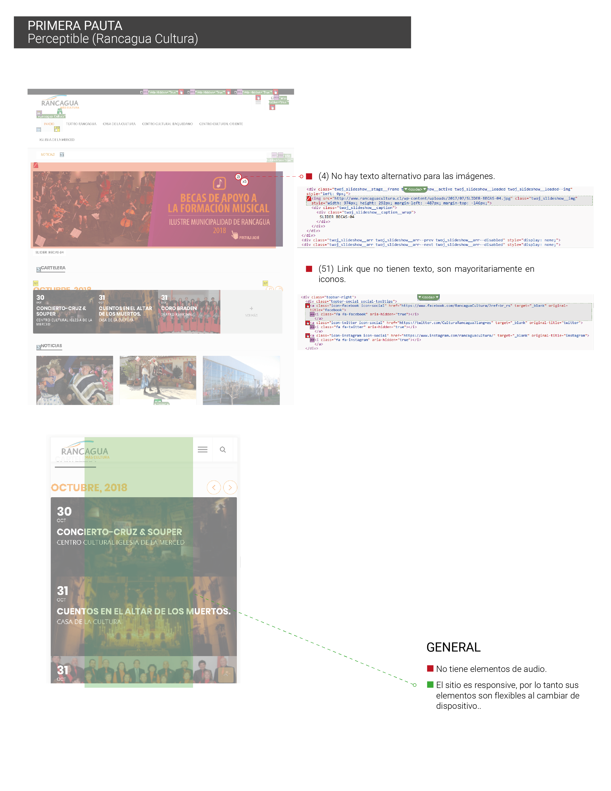
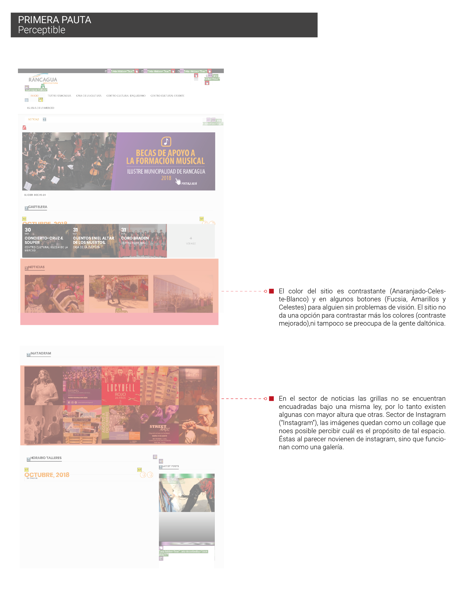
Pauta 1.1: Contenido no Textual
Las imágenes no tienen texto alternativo. El error es encontrado en la parte del
slider principal, el cual contiene 5 problemas de este tipo.
Pauta 1.2: Medios Tempodependientes
No aplica.
Pauta 1.3: Adaptable
No tiene elementos de audio.
El sitio es responsive, por lo tanto sus elementos son flexibles al cambiar
de dispositivo. Pero algunas sectores quedan desproporcionadas respecto a otras
previo al responsive.
Pauta 1.4: Distinguible
- El color del sitio es contrastante (Anaranjado-Celeste-Blanco) y en algunos
botones (Fucsia, Amarillos y Celestes) para alguien sin problemas de visión.
- El sitio no da una opción para contrastar más los colores (contraste mejorado),
ni tampoco se preocupa de la gente daltónica.
- En el sector de noticias las grillas no se encuentran encuadradas bajo una
misma ley, por lo tanto existen algunas con mayor altura que otras.
- Sector de Instagram (“Instagram”), las imágenes quedan como un collage que no
es posible percibir cuál es el propósito de tal espacio. Éstas al parecer no
vienen de instagram, sino que funcionan como una galería.
Principio 2: Operable
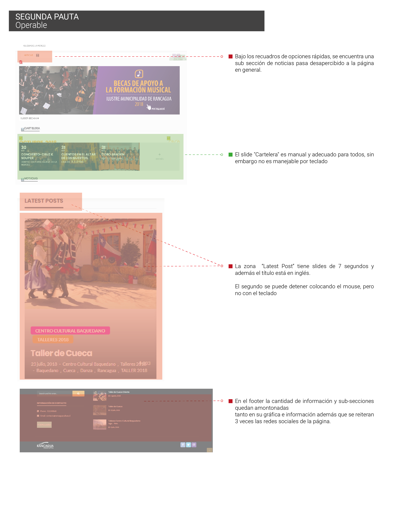
Pauta 2.1: Accesible por Teclado
No se puede recorrer el sitio a través del teclado (Tabulador).
Baja automáticamente a la parte inferior de la página
Pauta 2.2: Tiempo Suficiente
En el sector de “Latest Post” el cambio automático tiene dos errores,
lo primero no cumple con el tiempo requerido para personas con capacidades
diferentes, ya que éste dura 7 segundos en cambiar a la siguiente imagen.
El segundo se puede detener con el mouse, pero no con el teclado.
Pauta 2.3: Convulsiones
No aplica.
Pauta 2.4: Navegable
General:
El sitio es navegable pero en general el uso de imágenes con movimientos
(Gifs) reiterativo genera molestia al modo de visualizar la página.
Superior:
Bajo los recuadros de opciones rápidas, se encuentra una sub sección de
noticias pasa desapercibido a la página en general.
Inferior:
Previo al footer la cantidad de información y sub-secciones quedan amontonadas
tanto en su gráfica e información además que se reiteran 3 veces las redes sociales de la página.
Principio 3: Comprensible

Pauta 3.1: Legible
- Podría mejorar el orden, específicamente el footer.
- Jerarquías en los ptos. de las tipografías, creando un orden de lectura ambiguo.
- Hay tres secciones de noticias, dos de ellas son poco visibles.
- El orden general de la página no es claro en cuanto a prioridades (Calendario vs Noticias)
- Hay dos menús, el normal y el responsive, este último no debiese estar si no
se está adaptando a un tamaño menor.
Palabras e informaciones esenciales se encuentran en Inglés y no tienen traducción incluida.
Pauta 3.2: Predecible
El sector de Instagram no es predecible, no se entiende su propósito, si
es una página enlazada o solo una imagen clickeable
Pauta 3.3: Entrada de datos asistida
No aplica.
Principio 4: Robusto
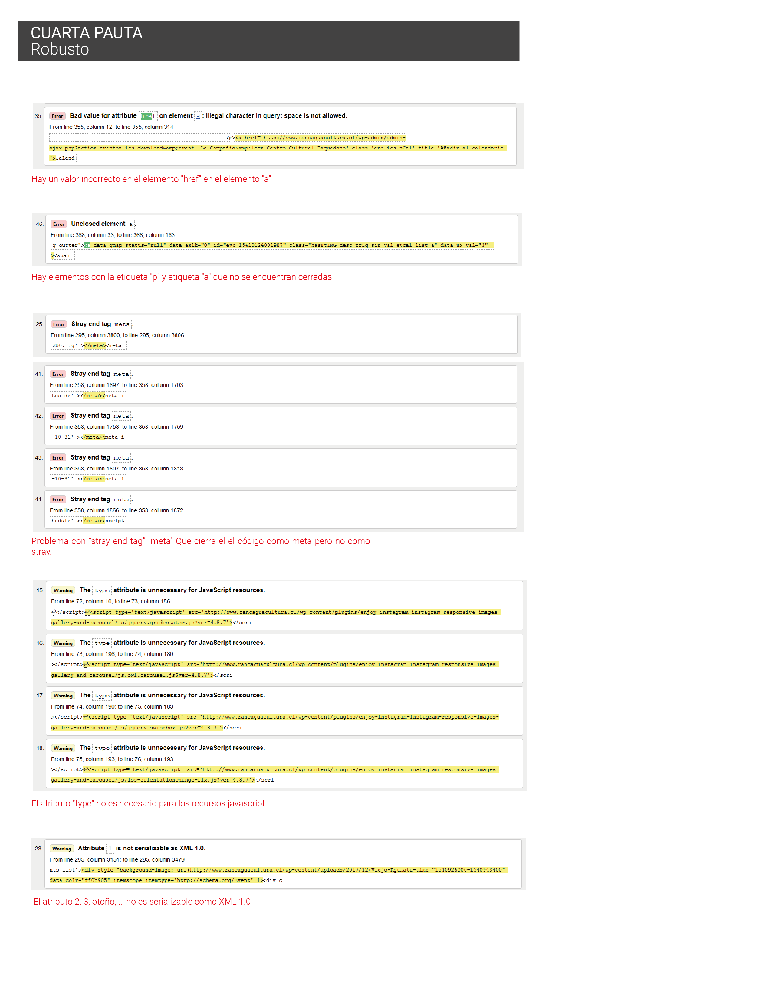
Pauta 4.1: Compatible
Entre errores y alertas hay 390 encontrados con el validador (W3):
Errores:
- Error de análisis en CSS ( { )
- Problema con “Stray end tag” "meta" Que cierra el el código como meta pero no como stay.
- Elemento "item" no es permitido como elemento secundario de "div"
- Hay elementos con la etiqueta "p" que no se encuentran cerradas
- Elemento ancla que no están cerrados
- Imágenes sin atributo "alt"
- Hay un valor incorrecto en el elemento "href" en el elemento "a"
- Hay espacios entre los atributos
- Atributo duplicado de palabras “de”
Alertas:
- El atributo "type" no es necesario para los recursos javascript.
- El atributo 2, 3, otoño, … no es serializable como XML 1.0